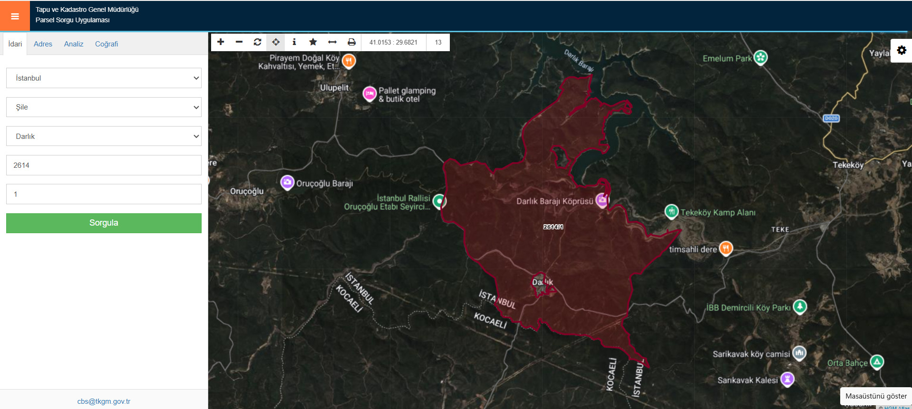
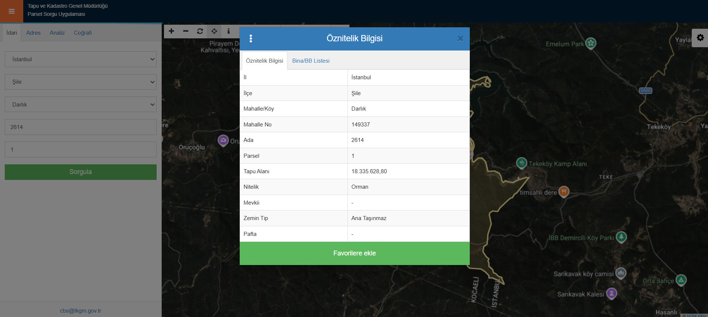
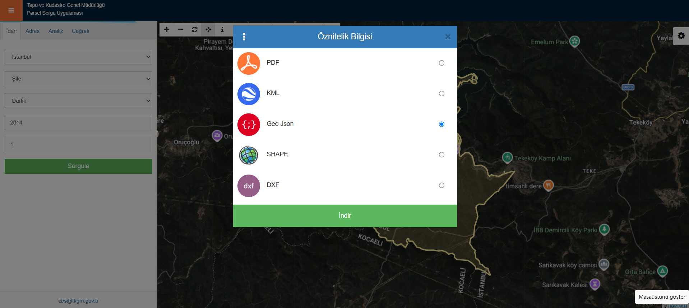
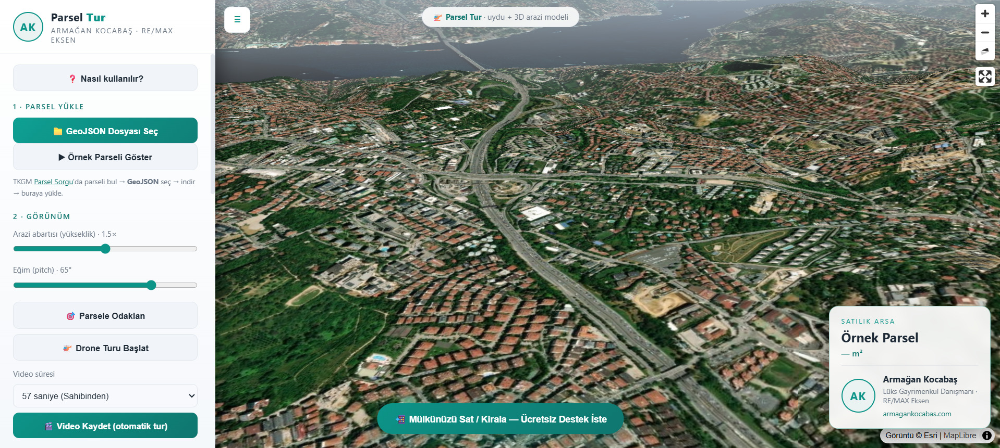
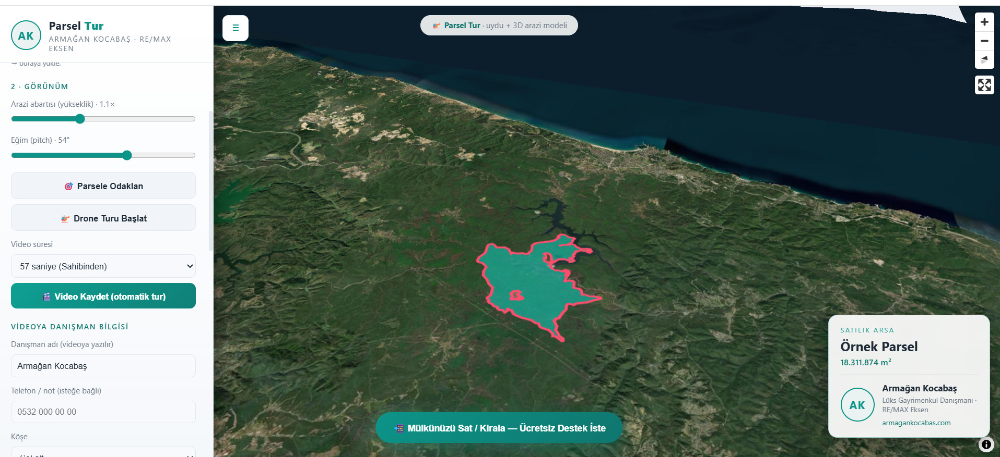

Parselin dosyasını indir
Parsel Sorgu'ya gir
Tarayıcından parselsorgu.tkgm.gov.tr adresini aç. Şifre veya kayıt gerekmez, ücretsizdir.
Koşulları kabul et
İlk girişte çıkan "Kullanım Koşulları" penceresinde "Kabul Ediyorum"a tıkla.
Parsel bilgilerini gir
Soldaki "İdari" sekmesinden sırayla İl, İlçe, Mahalle/Köy seç; ardından Ada ve Parsel numaralarını yaz.

Sorgula
"Sorgula" butonuna bas. Parselin harita üzerinde kırmızı olarak işaretlenir.
Parsele tıkla
Haritadaki kırmızı parselin üstüne tıkla. Parsele ait bilgi kutusu açılır.

İndirme menüsünü aç
Açılan kutudaki indirme menüsüne tıkla (üç nokta ⋮ ya da "İndir" butonu).
GeoJSON'u indir
Format listesinden "GeoJSON" seç ve indir. (Menüde PDF, KML, SHAPE, DXF de bulunur — bize GeoJSON lazım.) İnen dosyayı Masaüstü gibi bulabileceğin bir yere kaydet.

3D videoyu oluştur
Aracı Chrome'da aç
Parsel Tur'u bilgisayarında Chrome ile aç. (En akıcı 3D ve video sonucu bilgisayarda alınır.)
Dosyayı yükle
Sol panelde "GeoJSON Dosyası Seç"e tıkla, indirdiğin dosyayı seç. Parsel 3D haritada belirir, m² otomatik hesaplanır.
Birden fazla parsel: Yan yana birkaç parseli birlikte göstermek istersen, dosya seçme penceresinde Ctrl (Mac'te Cmd) tuşuyla birden çok GeoJSON seçebilirsin. Hepsi tek haritada birlikte görünür, alanları toplanır ve kamera tümünü kapsar.

Adını ve fotoğrafını ekle
"Videoya Danışman Bilgisi" alanına adını ve telefonunu yaz, köşeyi ve kart arka plan rengini seç. İstersen "📷 Fotoğraf Seç" ile fotoğrafını ekle; açılan pencerede sürükleyip yakınlaştırarak daire içinde ayarla ve Uygula de. İsim ve fotoğraf videoya kalıcı gömülür.
Görünümü ve kamera tarzını ayarla
Eğim, arazi yüksekliği ve parsel renklerini düzenle. Ardından "Kamera Hareket Tarzı" menüsünden sinematik çekim modunu seç: Sabit dönüş yapabilir, Helis (dönerek uzaklaşma/yükselme) ile çevreyi kadraja alabilir veya Dalış (dönerek yakınlaşma) efekti verebilirsin.
Videoyu kaydet
Önce video süresini seç (15 / 30 / 57 / 90 sn). Ardından "Video formatı (en-boy)" menüsünden paylaşacağın yere göre formatı seç:
• Yatay 16:9 — YouTube ve Sahibinden ilanları için.
• Dikey 9:16 — Instagram Reels ve Story için; video baştan dikey çıkar, kırpmana gerek kalmaz.
• Kare 1:1 — klasik Instagram gönderisi için.
Sonra "🎬 Video Kaydet"e bas. Harita seçtiğin orana göre kendini yeniden çerçeveler (kısa bir "Hazırlanıyor" anı), parsele odaklanır ve drone turu seçtiğin hareket tarzına göre otomatik başlar. Süre bitince video, kalıcı gömülü reklam kartınla birlikte MP4 formatında bilgisayarına iner ve harita eski haline döner.

Paylaş
Yayınla
Videoyu Instagram Reels/Story, Sahibinden ilanı veya WhatsApp durumunda paylaş. Hazır MP4 olduğu için düzenleme gerekmez.
İPUCU
En iyi sonuç bilgisayar + Chrome'da alınır. Çevre özelliklerini daha iyi göstermek ve sinematik etkiyi artırmak için ilanlarında "Helis (Dönerek Uzaklaş)" modunu kullanmanı öneririz.
Hadi ilk videonu oluştur
Bir parsel, üç dakika. Arsanı satışa hazır dinamik bir drone videosuyla öne çıkar.
🚁 Aracı Aç